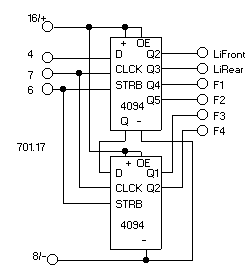
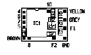
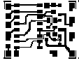

Zunächst finden Sie hier die Schaltpläne der mir bekannten bzw. mitgeteilten universellen Delta-Dekoders (ich nenne sie V1, V2 , V4 und V5) sowie anderer Lok-spezifischer Delta-Dekoder mit dem Chip 701.17b. Sie können sie sich als ZIP-File downloaden und in Ruhe studieren. Zu diesem Zweck klicken Sie bitte die verkleinerte Abbildung an.
Zunächst finden Sie hier die Schaltpläne der mir bekannten bzw. mitgeteilten universellen Delta-Dekoders (ich nenne sie V1, V2 , V4 und V5) sowie anderer Lok-spezifischer Delta-Dekoder mit dem Chip 701.17b. Sie können sie sich als ZIP-File downloaden und in Ruhe studieren. Zu diesem Zweck klicken Sie bitte die verkleinerte Abbildung an.
Bei einigen Details wissen wir leider trotz anstrengenden Grübelns nicht weiter. Wer die Typen bzw. Werte der betreffenden Bauteile weiß, der möge sich bitte melden. Die Funktion der Beschaltung von Pin 5 des 701.17b beim V1 hat Bo Braendstrup aufgeklärt, dem ich an dieser Stelle für den Hinweis danke: Durch die Z-Diode und die Widerstände wird im normalen Wechselstrombetrieb (DIP-Schalter auf "0000") der Überspannungsimpuls für die Fahrtrichtungsumschaltung detektiert. Im Normalfall liegt an Pin 5 eine Spannung von 0 V; während der Dauer des Umschaltspannung steigt diese auf ca. 5 V an, so daß zum einen die Fahrtrichtungsumschaltung bewirkt wird und zum anderen die Ausgänge Pin 9 und Pin 10 deaktiviert werden. Die entsprechenden Schaltung bei den der anderen Dekoder-Versionen funktionieren ähnlich, wie Martin Rothschink mir mitgeteilt hat, für dessen Mitwirkung ich an dieser Stelle gleichfalls danke. Er hat ferner darauf hingewiesen, daß die entsprechend Beschaltung an den Dekodern V1 und V4 weniger sicher ist als bei den Dekodern V2 und V3, da die Gefahr besteht, daß der 701.17b mit einer Spannung konfrontiert wird, die seine Versorgungsspannung übersteigt - was dem Chip wahrscheinlich nicht unbedingt zuträglich sein muß. Manfred Röhrig hat über Dr. Konrad Froitzheim herausgefunden, daß der Quarz ein normaler Uhrenquarz von 32 kHz ist. Auch an diese beiden vielen Dank. Roelof Salters schlägt vor, die Basiswiderstände der Funktions-Transistoren deutlich zur verringern (4k7 gegen 5V, 10k gegen die Versorgungsspannung), da ansonsten bei größeren Lastströmen die Verlustleistung an diesen zu groß werden kann. K. Segebrecht hat mich freundlicherweise auf einen Fehler im Schaltplan des Dekoder Nr.66415 (deltneu3.bmp) aufmerksam gemacht.
Außerdem kann ich mit dem Schaltplan des Delta-TELEX-Dekoders Nr.66031 dienen. Hierbei gibt es nicht viel zu erklären; der Spezial-Chip 701.21 managt alles. Ich habe auch keinen Weg gefunden, hier die Sonderfunktion zu aktivieren. Eingehende Untersuchungen haben erbracht, daß Märklin die ICs 701.21(A/B) offenbar mit und ohne Sonderfunktion fertigen läßt.
Siegfried Grob hat eine andere Ausführung des 66031 analysiert; dessen Schaltung sowie Platine sieht deutlich anders aus. Er hat die zusätzlich vorhandene Schaltung auch analysiert und versucht, eine Erklärung hierfür zu finden. Wie vieles bei Märklin ist auch dies etwas rätselhaft.
Ebenfalls ohne weitere Erklärung ist die Schaltung des 66032-Dekoders, die wir Dipl.-Ing C. Joachim Schröder zu verdanken haben. Auch hier ist ein Chip - der 701.43A - die zentrale und im wesentlichen allein maßgeblich Instanz; die Funktion der Motortreiber (IRF7103) und der Treiber für Licht und TELEX (BST52) ist offenkundig.
I - 701.13
II - 701.17(b)
III - 701.21A/B
IV - 701.43
Der Umbau der Delta-Dekoder I und II (701.13 oder 701.17(b)) ist elektrisch identisch; lediglich unterschiedliche Platinenlayouts erfordern ein ggfs. abweichendes Vorgehen.
Ein - so einfacher - Umbau des Delta-Dekoders III (701.21A/B) wie bei den Typen I und II ist leider nicht möglich. In seinem IC 701.21A ist der Funktiondsausgang chargenabhängig aktiviert oder deaktiviert. Es gibt zwar ICs 701.21A/B mit aktiviertem Funktionsausgang in anderen Dekodern - diese werden aber üblicherweise nicht in Delta-Dekodern verbaut. Dennoch habe ich eine Möglichkeit entwickelt, wie man diesen Dekoder - wenn man ihn nun schon einmal hat, nicht wegwerfen will oder nicht anderweitig verwenden oder verkaufen kann - mit der Extra-Funktion (und ein paar Gimmicks mehr) ausstatten kann.
Der Umbau des Delta-Dekoders der "IV. Generation" (701.43) - bei dem man sich etwas schwer tut, ihn vorbehaltlos als "Delta-Dekoder" zu bezeichnen - wiederum ist recht einfach möglich. Aus Zeitgründen komme ich aber vorerst nicht dazu, dies zu beschreiben.
 An anderer Stelle ist beschrieben, wie der "ganz" alte Delta-Dekoder - erkennbar an dem Fehlen der DIP-Schalter und der Einstellung der Adressen mittels Lötbrücken - um den Funktionsausgang erweitert werden kann. Hier beschreibe ich den Umbau der Delta-Dekoder Nr. 6603, die fast ausschließlich das IC 701.17 onboard haben. Bei seinem Nachfolger, dem Delta-Dekoder 66031 mit dem 701.21 onboard, ist dies, wie oben erwähnt, so leider nicht möglich.
An anderer Stelle ist beschrieben, wie der "ganz" alte Delta-Dekoder - erkennbar an dem Fehlen der DIP-Schalter und der Einstellung der Adressen mittels Lötbrücken - um den Funktionsausgang erweitert werden kann. Hier beschreibe ich den Umbau der Delta-Dekoder Nr. 6603, die fast ausschließlich das IC 701.17 onboard haben. Bei seinem Nachfolger, dem Delta-Dekoder 66031 mit dem 701.21 onboard, ist dies, wie oben erwähnt, so leider nicht möglich.
Mittlerweile habe ich auch herausgefunden, wie die vier Extra-Funktionen, die bei Verwendung des neuen Protokolls möglich sind, aktiviert werden. Dieses ist unten näher beschrieben.
Da ich nur Dekoder mit den Chips 701.17(b) und 701.13 besitze, kann ich nur den Umbau dieser Dekoder beschreiben. Ob sich ältere Dekoder ebenfalls umbauen lassen, vermag ich nicht zu beurteilen. Ferner bezieht sich diese Beschreibung auf die normalen Delta-Dekoder; spezielle - besonders kleine - Delta-Dekoder mögen eine andere Platine besitzen.
Der 701.13/701.17(b) verfügt über die richtungsabhängige Sonderfunktion, mit der normalerweise das Licht gesteuert wird. Bei dem Digital- und dem 6090-Dekoder sind die entsprechenden Ausgänge der Chips beschaltet. Bei fast allen Delta-Dekodern befinden sich zwar alle hierfür erforderlichen Bauteile auf der Platine. Märklin hat diese Sonderfunktionsausgänge aber nicht beschaltet, sondern die für die Funktion zuständigen Treibertransistoren absichtlich nur an den Motor-Ausgang geschaltet. Damit soll den Kunden offenbar ein Anreiz gegeben werden, die mitbezahlten Delta-Dekoder wegzuwerfen und wesentliche teurere Digital- oder 6090-Dekoder zu kaufen. Als Kehrseite dieser kundenunfreundlichen Politik ist der Umbau der Delta-Dekoder auch recht einfach - auch wenn sich Märklin bei den neuen Serien bemüht hat, diese durch Änderung des Platinenlayouts zu erschweren. Der nachfolgend beschriebene Umbau ist auch in MIBA Spezial 37 erläutert.
 Somit beschränken sich die Änderungen darauf, die Verbindung der Treibertransistoren zu den Motorausgängen aufzutrennen und eine Verbindung zu den Sonderfunktionsausgängen herzustellen sowie das Anlöten von zwei Lastwiderständen. Die Ausgänge des 701.13/701.17(b) sind nämlich vom Typ "open collector", so daß sie über einen Lastwiderstand an die positive Versorgungsspannung gelegt werden müssen. Diese Änderungen sind aus den Schaltplänen ersichtlich. Soll an die Ausgänge der Licht/TELEX-Zusatz angeschlossen werden, so müssen diese Lastwiderstände aber einen Wert von 4k7 haben.
Somit beschränken sich die Änderungen darauf, die Verbindung der Treibertransistoren zu den Motorausgängen aufzutrennen und eine Verbindung zu den Sonderfunktionsausgängen herzustellen sowie das Anlöten von zwei Lastwiderständen. Die Ausgänge des 701.13/701.17(b) sind nämlich vom Typ "open collector", so daß sie über einen Lastwiderstand an die positive Versorgungsspannung gelegt werden müssen. Diese Änderungen sind aus den Schaltplänen ersichtlich. Soll an die Ausgänge der Licht/TELEX-Zusatz angeschlossen werden, so müssen diese Lastwiderstände aber einen Wert von 4k7 haben.
Die dort ebenfalls eingezeichnete Änderung an der Beleuchtung (Betriebsspannung statt Schienen-Masse/Lok-Chassis) ist nicht erforderlich, um den Delta-Dekoder mit der Zusatzfunktion auszurüsten; Sie können den gemeinsamen Anschluß an dem Gehäuse (braunes Kabel) lassen. Die vorgeschlagene Änderung hat aber den Vorteil, daß das Licht gleichmäßig brennt und nicht mehr flackert. Wichtig ist allerdings, daß kein Pol der Lampenfassung mit dem Lok-Chassis verbunden ist. Dies ist bei den neueren Loks mit den kleinen Stecklämpchen meist der Fall. Bei älteren Loks müssen Sie die Fassung unbedingt vom Gehäuse isolieren.
Das nebenstehende Bild zeigt das Ergebnis dieser Operation.
 Aus der nebenstehen Abbildung sind die für die anstehende Operation relevanten Örtlichkeiten erkennbar, nämlich die Sonderfunktionsaugänge Pin 6 und 7, die ggfs. zu entfernenden 680-Ohm-Widerstände sowie die Kathode der Z-Diode, von der die für die Lastwiderstände erforderlichen 5V abgegriffen werden können. Die neueren Dekoder haben aber ein etwas abweichendes Layout.
Aus der nebenstehen Abbildung sind die für die anstehende Operation relevanten Örtlichkeiten erkennbar, nämlich die Sonderfunktionsaugänge Pin 6 und 7, die ggfs. zu entfernenden 680-Ohm-Widerstände sowie die Kathode der Z-Diode, von der die für die Lastwiderstände erforderlichen 5V abgegriffen werden können. Die neueren Dekoder haben aber ein etwas abweichendes Layout.
Es dürfte zwar selbstverständlich sein, aber ich möchte dennoch ausdrücklich darauf hinweisen, daß man sich nur mit einem gehörigen Maß von Löterfahrung an dieser Operation wagen und den 100W-Lötkolben hierbei im Schrank lassen sollte. Empfehlenswert ist ein 8W-Lötkolben mit sehr dünner Spitze, eine ruhige Hand und scharfe, am besten lupenbewehrte Augen. Bedenden Sie unbedingt, daß Sie bei einer Beschädigung des 701.13/701.17(b) den Dekoder wegwerfen oder nur noch als Ersatzteildepot verwenden können, denn die kundenfreundliche Politik von Märklin sorgt dafür, daß Sie nur fabrikneue Waren erhalten und nicht in die Verlegenheit kommen, einen 701.13/701.17b(b) auslöten und ersetzen zu müssen: Sie bekommen Ersatz weder für Geld noch für gute Worte. Ich spreche aus eigener, leidvoller Erfahrung. Sie löten auf eigene Gefahr - für Schäden bin ich nicht verantwortlich.
 Als erstes müssen Sie den Quartz links vom 701.13/701.17(b) nebst Plastik-Masse von der Platine lösen und vorsichtig nach oben/hinten biegen.
Als erstes müssen Sie den Quartz links vom 701.13/701.17(b) nebst Plastik-Masse von der Platine lösen und vorsichtig nach oben/hinten biegen.
Danach müssen Sie entweder die beiden 680-Ohm-Widerständen ablöten oder deren Verbindung zu den Motorausgängen des 701.13/701.17(b) - Pins 9 und 10 auf der rechten Seite unten - unterbrechen. Auf den Bildern sind die Widerstände belassen worden und die Verbindungen unterbrochen. Bei den neueren Dekodern mit dem ZDS1000 als Motortreiber haben Sie keine andere Wahl als die beiden Widerstände abzulöten.
Bei diesen neuen Dekoder müssen Sie auch die Verbindungen von Pin 6 und 7 zu Pin 8 mit einem scharfen Messer oder Skalpell beseitigen. Diese sollen offenbar die hier beschriebene Erweiterung erschweren. Oder aber Sie löten die Pins 6 und 7 ab und biegen sie vorsichtig etwas nach oben; es empfiehlt sich dann, etwas Isolierband zwischen Pins und Platine zu kleben.
Jetzt verbinden Sie Pins 6 und 7 mit den rechten (freigewordenen) Pads der 680-Ohm-Widerstände bzw. den Basis-Anschlüssen der beiden Transistoren, die meist die Aufschrift "C6" tragen, oder den mit diesen verbunden linken Pads der Widerstände, wenn Sie diese entfernt haben. Bei den neueren Dekodern ist Pin 6 mit dem Basis-Anschluß des rechten Transistors zu verbinden. Ich benutze hierfür dünne CuLa-Draht. Sie können aber jeden anderen isolierten dünnen Draht verwenden. Die nebenstehende Abbildung zeigt diesen Zustand der Operation.
Zum Finale löten Sie zwei Widerstände mit einem Wert von 10k (oder 4k7) auf der einen Seite an Pins 6 und 7 des 701.13/701.17(b) oder die damit verbundenen Pads der 680-Ohm-Widerstände und mit der anderen Seite an die Kathode der Z-Diode. Da der Platz nicht eben üppig bemessen ist, sollten Sie sehr kleine Widerstände (1/10 W) verwenden. Die im dem obigen Bild erkennbaren 1/4W-Widerständen sind schon etwas zu groß. Wenn Sie die 680-Ohm-Widerstände entfernt haben, können Sie die 10k-Widerstände (oder 4k7) auch direkt auf die freigewordenen und mit den Basisanschlüssen der Transistoren verbundenen Pads löten.
Kontrollieren Sie sorgfältig, daß Sie alle und nur die erforderlichen Verbindungen vorgenommen haben und keinerlei Lötbrücken entstanden sind. Dann biegen Sie den Quartz wieder zurück und verdrahten die Lämchen ggfs. zusätzlich wie oben beschrieben und in den Schaltplänen separat markiert. Erforderlich für das Nachrüsten der Sondernfunktion ist dies aber nicht.
 Der Umbau des Delta-Dekoders der 3. Generation - erkennbar an dem IC 701.21A/B onboard - ist leider deutlich aufwendiger als bei den alten Delta-Dekodern mit dem 701.13 oder 701.17(b). Genau genommen erfordert er den zusätzlichen Bau eines speziellen "Sonderfunktions-Dekoders", der jedoch dank der SMD-Technik so klein aufgebaut werden kann, daß er bequem auf den Delta-Dekoder geklebt werden kann.
Der Umbau des Delta-Dekoders der 3. Generation - erkennbar an dem IC 701.21A/B onboard - ist leider deutlich aufwendiger als bei den alten Delta-Dekodern mit dem 701.13 oder 701.17(b). Genau genommen erfordert er den zusätzlichen Bau eines speziellen "Sonderfunktions-Dekoders", der jedoch dank der SMD-Technik so klein aufgebaut werden kann, daß er bequem auf den Delta-Dekoder geklebt werden kann. Aus Zeitgründen muß ich mich gegenwärtig aber darauf beschränken, im übrigen auf meine entsprechende Bauanleitung in MIBA 12/01 S.36 zu verweisen. Um einen Eindruck zu gewinnen, gibt hier aber den Schaltplan dieses add-on sowie den Bestückungsplan dessen Platine.
Wegen Platine und ggfs. Bauteile kann man beim Service anfragen.
 Bekanntlich bietet das neue Datenformat nicht nur die definitive Kontrolle der Richtung sondern auch bis zu vier weitere Funktionen, die als Extra-Funktionen bezeichnet werden. Märklin hat dieses auch für H0 mögliche Feature bislang verschwiegen; auf auf eine direkte Anfrage erhielt ich den Bescheid, daß in absehbarer Zeit nicht an eine Nutzung in H0 und entsprechende Dekoder gedacht sei. Etwa ein halbes Jahr später hat Märklin aber die ersten H0-Loks mit derartigen Dekodern inseriert - ein weiteres Beispiel für die kundenunfreundliche Desinformationspolitik der Firma Märklin.
Bekanntlich bietet das neue Datenformat nicht nur die definitive Kontrolle der Richtung sondern auch bis zu vier weitere Funktionen, die als Extra-Funktionen bezeichnet werden. Märklin hat dieses auch für H0 mögliche Feature bislang verschwiegen; auf auf eine direkte Anfrage erhielt ich den Bescheid, daß in absehbarer Zeit nicht an eine Nutzung in H0 und entsprechende Dekoder gedacht sei. Etwa ein halbes Jahr später hat Märklin aber die ersten H0-Loks mit derartigen Dekodern inseriert - ein weiteres Beispiel für die kundenunfreundliche Desinformationspolitik der Firma Märklin.
Das neue Datenformat wird nur von neueren Dekodern ab den Chips 701.17 bzw. 701.17b ausgewertet, d.h. ein Umbau der Dekoder mit dem Ziel, die Extra-Funktionen zu nutzen, ist mit den älteren Dekodern - z.B. denen mit dem 701.13 - nicht möglich.
Der Umbau erfordert etwas diffizile Lötarbeit am 701.17(b); da dieser recht empfindlich ist, leicht auf der Strecke bleiben kann und Märklin sich nach wie vor weigert, diese Chips als Ersatzteil einzeln zu liefern, sollte man sich das Risiko vor Augen führen.
Der Umbau besteht darin, vier Pins des Chips abzulöten oder/und neu zu verdrahten. Je nach Dekodertyp ist dies mehr oder weniger Arbeit. Außerdem ist ein weiteres IC sowie ein oder zwei Transistoren nebst Widerständen anzuschließen.

Das Prinzip der Auswertung der vier Extrafunktionen beruht darauf, daß u.a. diese entsprechenden Daten vom 701.17(b) seriell in ein Schieberegister übertragen und an dessen Ausgängen zur Verfügung gestellt werden. Im "Vollausbau", d.h. zu Benutzung von allen vier Extra-Funktionen EF1 bis EF4, sind zwei CMOS-Schieberegister vom Typ 4094 erforderlich. In H0 werden aber normalerweise zwei Extrafunktionen völlig genügen, so daß man mit einem 4094 auskommt.
 Für diese Erweiterung muß Pins 3, 4 und 5 von der Platine abgelötet werden. Je nach Dekodertyp kann dies auch bei Pins 6 und 7 erforderlich sein oder deren Anschluß gegen Masse muß aufgehoben werden (bei Pin 3 ist dies meist nicht möglich, da die Masse-Verbindung meist unter dem Chip liegt). Pin 3 bleibt frei; Pin 5 wird über einen Widerstand 270k an Schienen-Masse bzw. Lok-Chassis (braunes Kabel) gelegt. Pins 4, 6 und 7 werden wie aus der Abbildung ersichtlich mit dem 4094 verbunden.
Für diese Erweiterung muß Pins 3, 4 und 5 von der Platine abgelötet werden. Je nach Dekodertyp kann dies auch bei Pins 6 und 7 erforderlich sein oder deren Anschluß gegen Masse muß aufgehoben werden (bei Pin 3 ist dies meist nicht möglich, da die Masse-Verbindung meist unter dem Chip liegt). Pin 3 bleibt frei; Pin 5 wird über einen Widerstand 270k an Schienen-Masse bzw. Lok-Chassis (braunes Kabel) gelegt. Pins 4, 6 und 7 werden wie aus der Abbildung ersichtlich mit dem 4094 verbunden.
In dieser Schaltung verliert der 4094 zugunsten des "Gedächtnisses" des 701.17/b) bei einem Spannungsausfall seinen Inhalt - dieser wird jedoch einige Sekunden (die Zeit ist abhängig von dem Steuergerät) nach erneuter Spannungszufuhr durch den 701.17(b) wieder hergestellt. Je nach angeschlossener Last müssen die Basiswiderstände der an den 4094 angeschlossenen Transistoren auf 10k verringert oder aber Darlington-Tranistoren oder FETs eingesetzt werden.
Einen Nachteil dieser Erweiterung möchte ich aber hervorheben: Danach ist kein Betrieb im Analog-Modus mehr möglich, da der 24V-Umschaltimpuls nicht mehr erkannt wird.
Die nebenstehende verkleinerte Abbildung zeigt die erforderlichen Änderungen am Beispiel des Schlepptender-spezifischen Delta-Dekoders, der sich hierfür besonder gut eignet, weil einige Null-Ohm-Widerstände als Brücken vorhanden sind und leicht entfernt werden können. Außerdem bietet der Tender genügend Platz für die aus herkömmlichen Bauteilen aufgebaute Zusatzschaltung.
Alternativ kann die Spannungsversorgung auch am Puffer-Elko, also an der Anode der Z-Diode bzw. der Kathode der Puffer-Diode abgegriffen werden. Dadurch verliert der 4094 bei einem Spannungsausfall zwar nicht seinen Inhalt, allerdings wird dadurch die Zeitdauer des "Gedächtnisses" des Dekoders beeinflußt
Eine weitere Variante schlägt Peter Tröster vor: Der OE-Eingang des 4094 wird nicht an die Spannungversorgung (Pin 15) gelegt sondern über einen Widerstand von ca. 220k an die Kathode der Z-Diode bzw. die Anoder der Puffer- Diode geschaltet, also wie aus dem Schaltplan (ohne Widerstand) ersichtlich. Dadurch werden die Ausgänge des 4094 bei einem Spannungsausfall ausgeschaltet, sein Inhalt wird hierdurch jedoch nicht berührt.
Die eingezeichneten und mit "*" markierten Dioden stellen nur einen Vorschlag dar, wie möglicherweise die Kompatibilität zum Analog-Betrieb hergestellt werden kann. Ich habe diese Beschaltung nicht ausprobiert; sie ist ein Resultat der Analyse der normalen 24V-Detektor-Schaltung sowie des 6095-Dekoders. Sie müßte funktionieren. Da ich aber eine Zerstörung des 701.17/b) nicht ausschließen kann und mir der Analog-Betrieb nicht besonders am Herzen liegt, warte ich auf einen mutigen Auch-Analog-Fahrer, der einen Dekoder riskiert.
Sie können den Schaltplan als ZIP-File downloaden und in Ruhe studieren. Zu diesem Zweck klicken Sie bitte die verkleinerte Abbildung an. Voraussetzung ist allerdings, daß Ihr Browser ZIP-Files als Datei speichert bzw. anfragt, was er mit dem File machen soll. Dies läßt sich bei allen gängigen Browsern einstellen - z.B. beim Netscape-Navigator unter "Options / GeneralPreferences / Helpers".
Kenneth Pallund bietet auf Grundlage dieser Erläuterungen ebenfalls eine Beschreibung des Umbaus an.


Wegen Platine und ggfs. Bauteile kann man beim Service anfragen. Dieser Beitrag ist in ähnlicher Form auch in MIBA 2/02 S.34 erschienen.Ich möchte an dieser Stelle Bo Braendstrup und auch Dr. Konrad Froitzheim für die geleistete freundliche Unterstützung danken.

{kind=link}
{kind=link}
{kind=link}